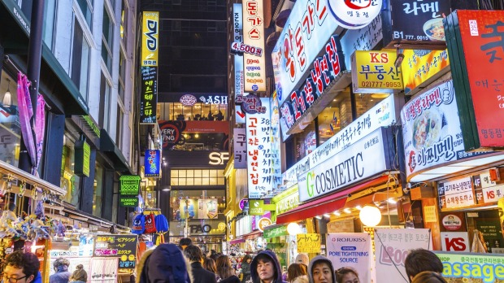
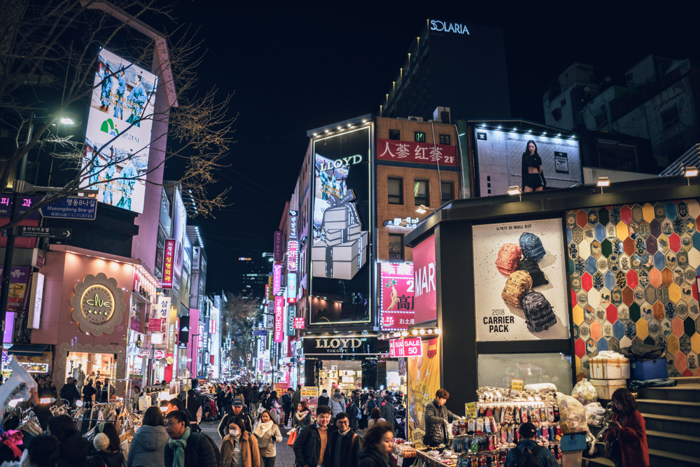
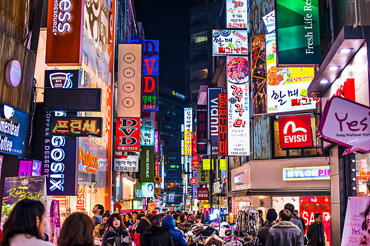
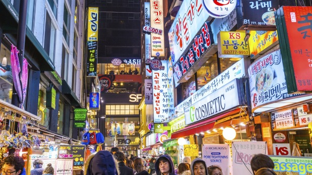
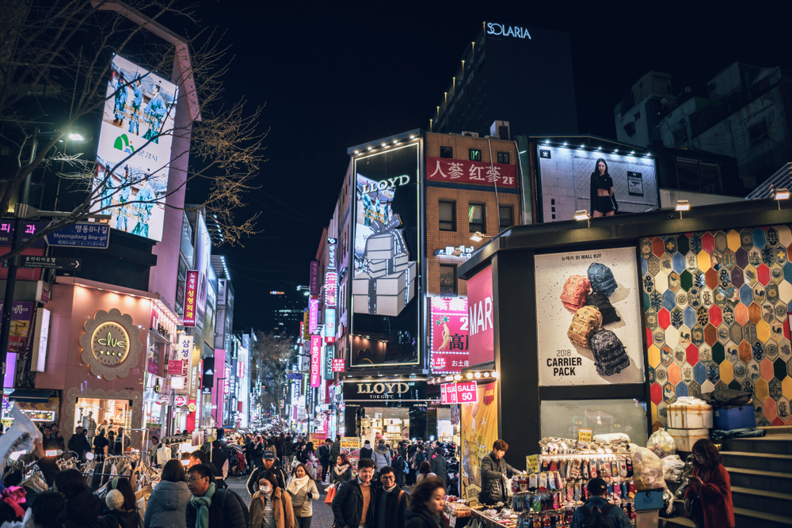
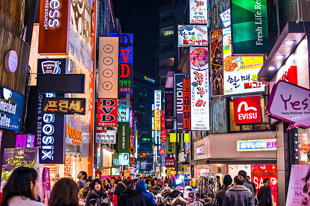
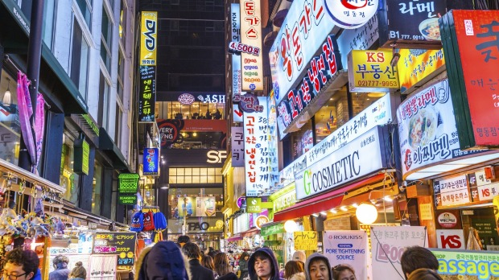
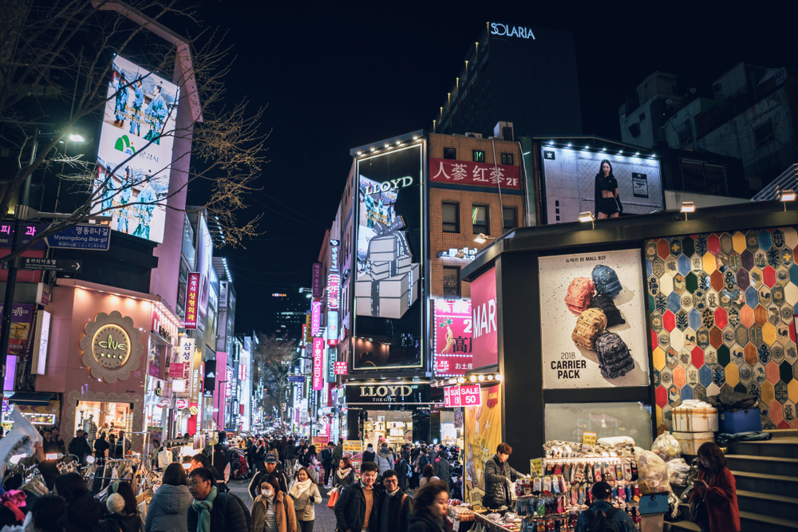
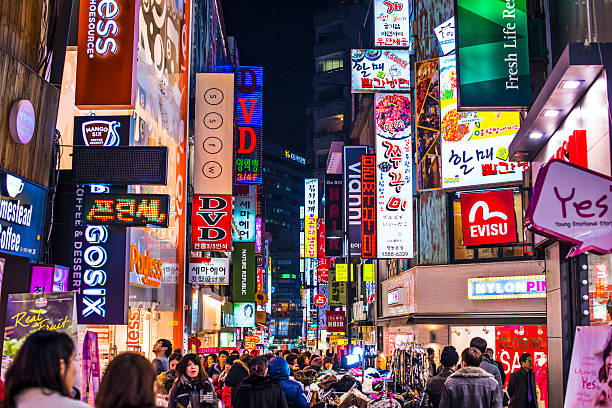

Gyeongbokgung also known as Gyeongbokgung Palace or Gyeongbok Palace, was the main royal palace of the Joseon dynasty. Built in 1395, it is in northern Seoul, South Korea. The largest of the Five Grand Palaces built by the Joseon dynasty, Gyeongbokgung served as the home of Kings of the Joseon dynasty, the Kings households, as well as the government of Joseon. Gyeongbokgung Palace, located north of Gwanghwamun Square, is one of the most iconic sights in all of Korea thanks to its long and storied history. Construction on Gyeongbokgung Palace was completed in 1395 at the beginning of the Joseon Dynasty during the reign of King Taejo. Gyeongbokgung, which means “palace greatly blessed by Heaven,” was built in the heart of Seoul surrounded by Mount Bugaksan and Mount Namsan.
There are 7 ways to get from Incheon Airport (ICN) to Gyeongbokgung (Station), you can ride in bus, train, taxi, car or towncar. You can arrive in Gyeongbokgung Palace approximately less than an hour when you ride on taxi, towcar or drive but it is more expensive, and you get there more than an hour if you ride in bus and train and the fee is inexpensive.



Myeong-dong is one of the primary shopping districts in Seoul. The two main streets meet in the center of the block with one beginning from Myeong-dong Subway Station (Seoul Subway Line No. 4) and the other from Lotte Department Store at Euljiro. Many brand names shops and department stores line the streets and alleys. Common products for sale include clothes, shoes, and accessories. Unlike Namdaemun or Dongdaemun, many designer brands are sold in Myeong-dong. In addition, several major department stores have branches here, including Lotte Department Store, Shinsegae Department Store, Myeong-dong Migliore, Noon Square and M Plaza. The department stores carry many premium labels and other fashionable goods at reasonable prices. Myeong-dong also has family restaurants, fast food, plus Korean, Western and Japanese dining options. Many restaurants in Myeong-dong specialize in dongaseu (pork cutlet) and kalguksu (noodle soup). Other businesses in the area include hair salons, banks and theaters.
There are 6 ways to get from Incheon Airport (ICN) to Myeongdong (Station) by bus, train, taxi, car or towncar You can arrive in Myeongdong approximately less than an hour when you ride on taxi, towcar or drive but it is more expensive, and you get there more than an hour if you ride in bus and train and the fee is inexpensive.
Go back to Map Page.